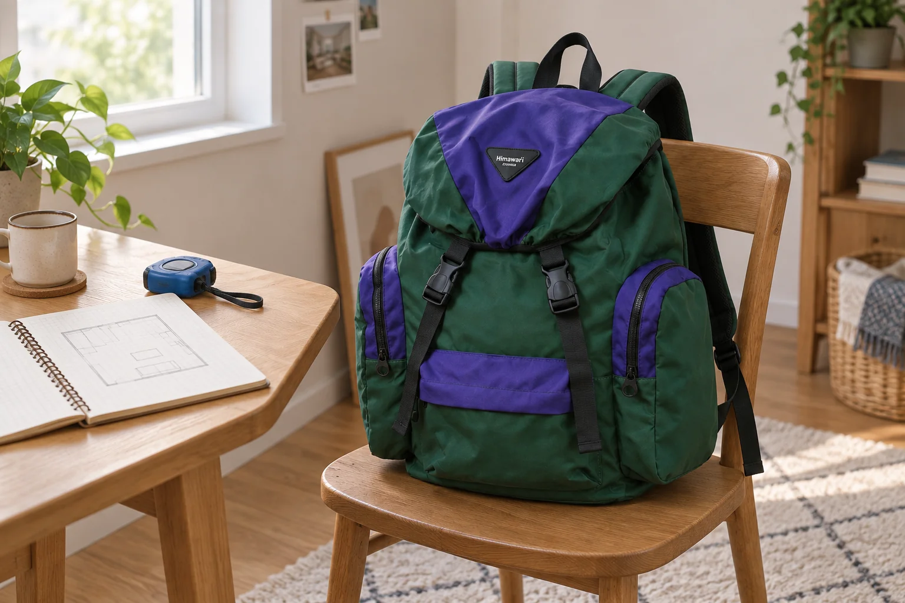

가구 매장에 가져갈 방 치수 한 장

가구 매장에서 마음에 드는 책상을 보았을 때 집의 벽 길이가 기억나지 않으면 선택이 멈춥니다. 대략 들어갈 것 같다는 느낌만으로는 의자를 뺄 자리나 문이 열리는 방향까지 비교하기 어렵습니다. 출발 전에 방을 위에서 본 모양으로 간단히 그리고 잰 위치를 적어두면 상담할 자료가 됩니다. 그림의 선을 정확히 그리는 것보다 숫자가 무엇을 잰 값인지 알아보게 하는 것이 중요합니다.
새 가구가 들어갈 자리에는 지금 있는 가구와 움직일 수 없는 부분을 함께 그립니다. 문과 창문, 붙박이장, 기둥처럼 배치에 영향을 줄 수 있는 요소입니다. 문이 열리는 쪽은 곡선으로 남기고, 창문 앞을 이용해야 한다면 그 위치도 표시합니다. 빈 벽 한 구간만 따로 그리면 가구가 들어온 뒤 주변을 어떻게 쓰는지가 빠질 수 있습니다.
줄자가 닿은 두 지점까지 기록하기
벽의 전체 길이와 실제 가구를 놓을 수 있는 길이는 다를 수 있습니다. 걸레받이나 기둥이 튀어나온 부분, 기존 가구를 남겨둘 부분을 따로 봅니다. 줄자를 어디서 어디까지 댔는지 선과 점으로 표시하면 매장에서 숫자의 의미를 설명하기 쉽습니다. 같은 길이를 다시 잴 때도 시작 지점을 알 수 있어 비교에 도움이 됩니다.
한 장에서는 단위를 통일합니다. cm로 정했다면 다른 숫자에도 cm를 붙이거나 종이 위에 공통 단위를 명시하세요. 폭과 깊이가 바뀌어 적히는 것을 막으려면 '벽을 따라가는 길이'와 '벽에서 앞으로 나오는 깊이'처럼 처음에는 풀어 적어도 됩니다. 판매처가 쓰는 가로·세로·높이 표기와 내 메모의 방향이 같은지 매장에서 대조합니다.
| 적어둘 값 | 같이 표시할 내용 |
|---|---|
| 설치 자리의 폭 | 어느 두 지점 사이인지 |
| 앞으로 나올 수 있는 깊이 | 남겨야 할 통로와 기존 가구 |
| 높이 제한 | 선반·창문 등 제한을 만든 부분 |
| 문과 서랍을 열 영역 | 열리는 방향과 겹치는 물건 |
방 사진도 한 장 남겨두면 그림에 없는 정보를 보완할 수 있습니다. 사진을 어느 방향에서 찍었는지 스케치에 작은 화살표로 표시하세요. 광각처럼 넓게 보이는 사진만으로 실제 거리를 계산하기보다 치수 메모와 함께 봅니다. 매장에서 사진의 어느 벽에 가구를 둘지 바로 짚을 수 있으면 설명이 짧아집니다.
가구가 들어갈 공간과 쓰는 공간
가상의 예로 사용할 수 있는 벽 구간이 120 cm이고 책상 폭이 110 cm라면 숫자의 차이는 10 cm입니다. 그렇다고 설치에 필요한 여유까지 충분하다는 뜻은 아닙니다. 튀어나온 부분이 있는지, 제품의 전체 폭에 손잡이 등이 포함되는지, 판매처가 따로 요구하는 설치 조건이 있는지 확인해야 합니다. 숫자의 차이는 질문을 시작하는 자료로 씁니다.
깊이도 같은 방식으로 봅니다. 책상 자체가 방 안에 놓이는 모습과 의자를 뒤로 빼 앉는 모습은 다릅니다. 서랍장이면 서랍을 열었을 때 앞에 있는 가구와 겹치는지 떠올려봅니다. 필요한 사용 공간을 모든 가구에 같은 숫자로 적용하지 말고, 실제 제품의 문이나 서랍이 열린 상태를 매장에서 확인하며 자신의 배치와 비교하세요.
가구 매장에 가져갈 준비물은 치수 메모와 같은 방향에서 찍은 방 사진부터 고릅니다. Himawari No.1111 제품 정보는 그날의 외출용 가방을 살펴볼 자료입니다. 메모를 꺼내 상담할 순서를 생각하고, 현장에서 추가로 잴 것이 있다면 줄자도 준비하세요. 필요한 치수가 적힌 한 장이 있어야 제품 앞에서 방의 어느 자리를 말하는지 바로 짚을 수 있습니다.

방 안에 들어간 뒤만 생각하지 않기
설치 자리에 놓일 수 있는 가구도 그곳까지 운반하는 방법은 별도의 질문입니다. 현관, 복도, 계단처럼 통과할 곳이 있고 제품이 분리되어 배송되는지도 확인해야 합니다. 방 치수 한 장이 운반 가능 여부를 보장하지는 않습니다. 직접 재기 어려운 구간은 어림한 수치를 쓰는 대신 어떤 경로인지 설명하고 판매처에 확인할 항목으로 남깁니다.
상담에서는 '이 방에 들어가나요?'처럼 한 번에 묻기보다 설치 자리와 이동 경로를 나누어 질문합니다. 제품의 외부 크기를 확인한 뒤 배송 형태와 설치에 필요한 조건을 듣습니다. 여러 후보를 비교한다면 제품 이름 옆에 각각의 답을 적어두세요. 다른 책상의 분리 여부를 마음에 든 책상의 조건으로 옮겨 기억하지 않도록 하는 기록입니다.
실측이 애매했던 값은 자신 있게 둥글려 쓰지 않습니다. '이 부분 다시 측정'이라고 표시하고, 매장에서 결정하기 전에 어느 값이 중요한지 알아볼 수 있습니다. 예를 들어 높이가 제한된 자리라면 제품의 최고 높이와 해당 구간의 높이가 핵심일 수 있습니다. 중요한 값을 확인하지 못한 상태라면 그 값을 다시 잰 뒤 선택하는 흐름을 잡습니다.
상담 내용을 집에서 다시 대조하기
집에 돌아오면 후보 제품의 크기를 스케치에 다시 올려봅니다. 바닥에 종이띠를 놓아 가로와 깊이를 가늠하면 기존 가구와의 관계를 볼 수 있습니다. 문을 열고 실제로 지나가며 평소 동작에 방해가 있는지 살펴보세요. 이 가상 배치는 실제 설치 결과를 대신하지 않지만 매장에서 잊었던 사용 장면을 떠올리는 자료가 됩니다.
가족이나 함께 사는 사람이 쓰는 공간이라면 그 사람의 동선도 확인합니다. 내 의자를 빼는 데 충분해 보여도 다른 사람이 수납장 문을 여는 순간 겹칠 수 있습니다. 평소 동시에 하는 행동을 몇 가지 떠올려보고 스케치에 필요한 여유를 표시합니다. 모든 행동을 상상해 끝없이 측정하기보다 자주 사용하는 문과 통로부터 검토하면 됩니다.
마지막에는 새 치수와 판매처에서 들은 조건을 같은 한 장에 정리합니다. 제품 이름, 전체 크기, 설치 관련 확인 내용, 다시 잰 위치가 서로 이어져 있어야 합니다. 처음의 메모를 버리고 숫자만 새로 적으면 어느 측정을 바꿨는지 놓치기 쉽습니다. 선택한 가구를 주문할 때에는 그 제품의 조건을 다시 확인하고, 기록을 배송과 설치 상담에서도 펼쳐볼 수 있게 보관합니다.